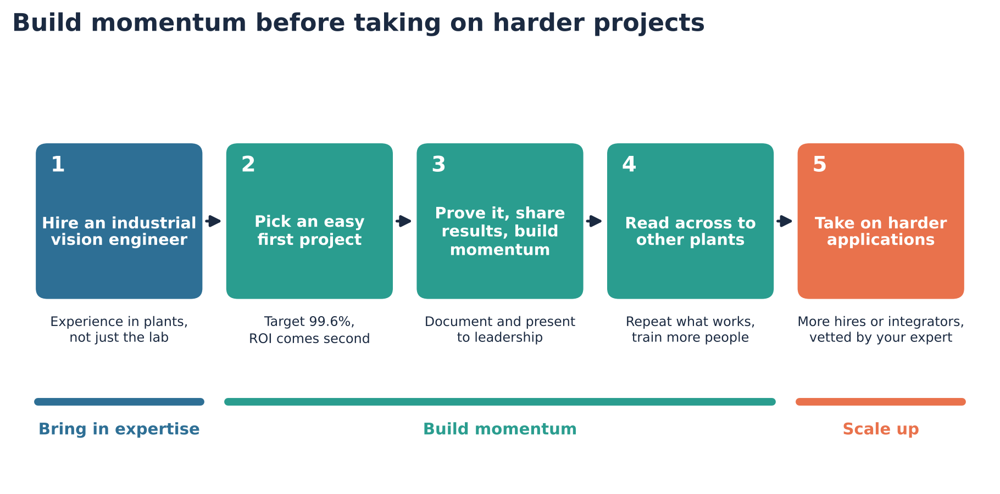
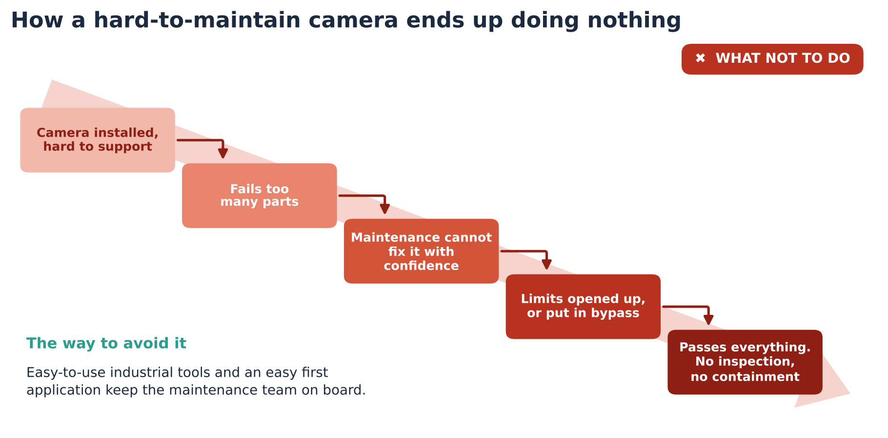
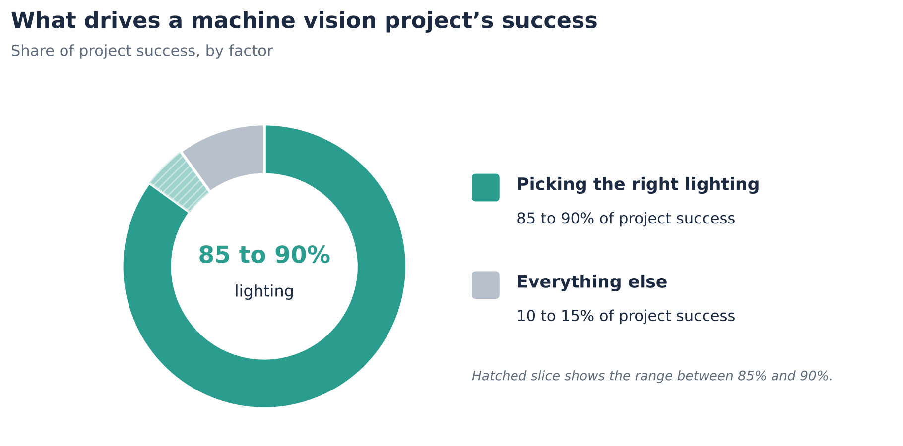
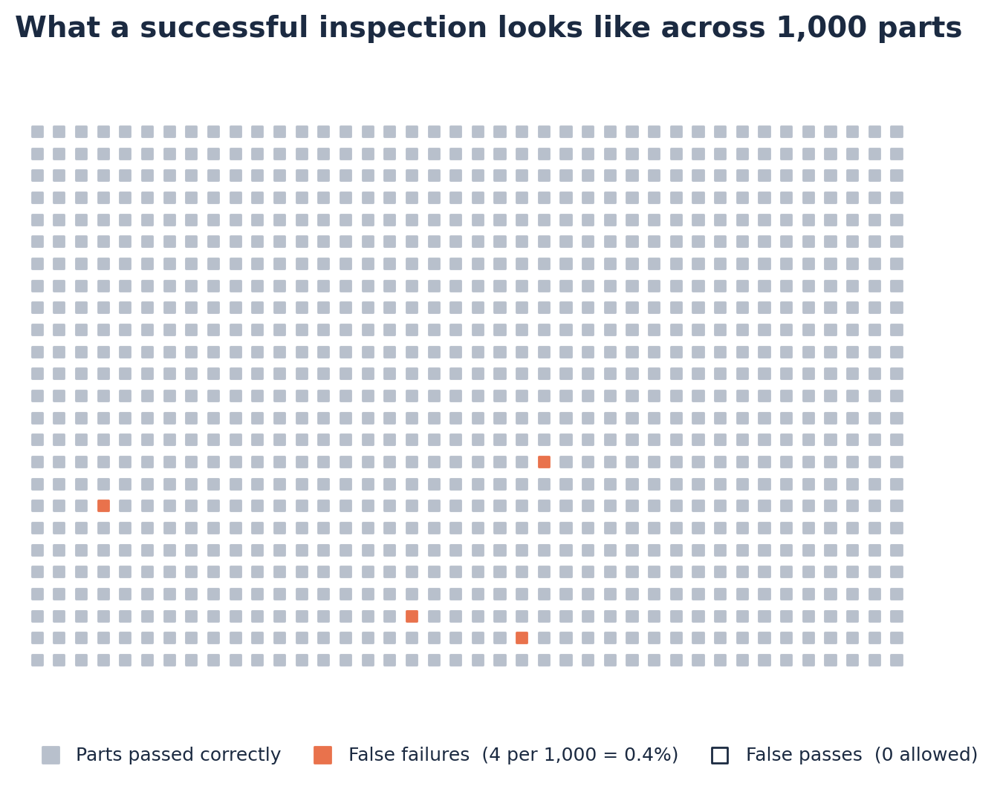
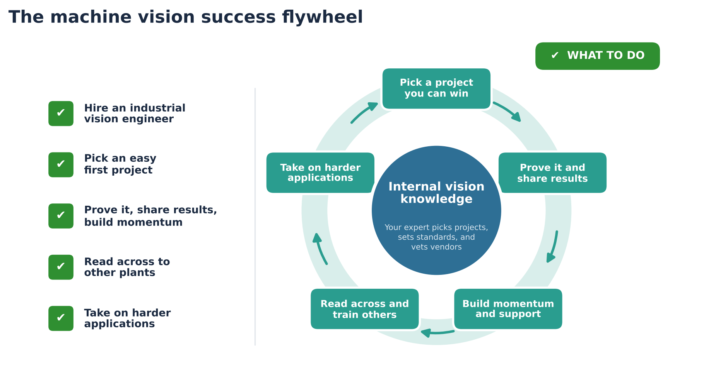

How Do I Get Started with Machine Vision?
You likely know that AI, machine vision, physical AI, and the other technologies meant to make companies operate more efficiently are things you will need to add to your manufacturing operations to remain competitive. The hard part is always knowing how to get started. In this article, I cover, as succinctly as I can, how to get started with machine vision.
Projects fail on approach, not technology
There are a lot of technologies out there, and it is not easy to know what is real versus what is not. In my experience, many companies do not focus on the right things. When a project is unsuccessful, it is usually not because they picked software A versus software B. It is because their approach to the problem was not architected well.
You are much more likely to fail a machine vision project because you chose the wrong application or did not define success criteria well than because of which technology you picked.
Build momentum with an easy first project
Machine vision is like anything else in the sense that you want to get momentum going. A lot of companies have tried their first vision system, or their second or third, and they have all been failures. The technology fails to get traction because they cannot show ROI on it. As a result, machine vision gets a bad reputation in the organization, and the company either never adds it to its processes and never becomes more efficient, or it pivots to different technologies.
As with starting any new discipline, you begin with easy work and make a point of doing something consistently. Once you see some minor successes, you build confidence and a deeper understanding of what you are trying to do and how to go about doing it. From that momentum you gather attention, get more support, and take on more and more.
To build that momentum, you need to define what success looks like early on and give yourself the best chance to be successful. My recommendation is to pick a very easy project, even if it does not have the best ROI. Once the organization understands what machine vision takes and how to go about it, you will start making much more intelligent decisions on more expensive, higher ROI projects.
Your goal with the first project is to get comfortable with machine vision and learn from it, not to maximize ROI.
Hire an experienced industrial machine vision engineer
How do you know what is easy? Usually it takes an expert to tell you what is easy versus what is hard. In contrast to someone who has read some articles or gone to a conference or two, an expert has lived the machine vision life for years. They have seen projects that succeeded and projects that failed, and they know the root causes for why something will fail. As a result, they can make intelligent decisions about what is a good project. If the guidance to that person is to pick an easy machine vision project that is very likely to succeed so the company can get comfortable, they can do that.
For any company looking to get into machine vision, my number one recommendation is to hire an experienced machine vision engineer onto your central manufacturing function, whether that is your corporate advanced manufacturing team, corporate standards team, corporate manufacturing engineering team, or process engineering team.

What experienced means
I am not talking about PhD or master’s level people. That is not a bad thing, but you do not want to look for people whose machine vision experience is in a lab or in programming with Python or open source vision libraries like OpenCV. You want machine vision engineers who have worked in manufacturing facilities for multiple years, deploying industrial machine vision technologies to solve manufacturing problems.
I am also not talking about hiring a controls person or a robot person who knows some vision. I am talking about someone who has spent 80% or more of their time on machine vision solutions for multiple years in an industrial environment.
Why industrial technology matters
The big players in industrial machine vision are Cognex, Keyence, and Matrox. These companies have packaged powerful machine vision algorithms into an industrial package that does two things. First, it handles all the industrial communications and is meant to run 24/7 in manufacturing facilities, as opposed to running open source OpenCV on a Raspberry Pi. Second, on the lower end of the spectrum, such as smart cameras or simpler controllers, these technologies contain only basic inspection tools. Those tools get the job done, and get it done well in manufacturing, and they come with interfaces that are much easier for your plant maintenance staff to navigate and maintain.
That is a huge deal. If the plant maintenance team is not interested in supporting the system or cannot learn the details of the software, the project is never going to be successful. The maintenance team needs to understand it, know what to change, and know how to fix it without ruining the inspection. Otherwise, the system fails every single part, the maintenance team does not like it, and they put it in bypass, turn it off, or take it out. That is exactly how you do not achieve momentum.
The other problem is that, to make it stop failing parts, the maintenance team will open up the inspection limits. If you keep opening up the limits, it becomes impossible to fail anything. Then you are not really doing inspection. You are not containing anything, and you are not maintaining quality.

A camera that passes everything is never going to fail anything either.
The best way to get maintenance team buy-in is to make it easy for them. If the interface is intuitive and they can learn it in 30 seconds, you are very likely to get the entire maintenance team to understand and support it. The easiest way to achieve that is to pick easy to use, industrially proven technology and go after an easy application where you know it will work over 99% of the time.
Give the engineer the right first assignment
Once you hire the right candidate, their first task should be to walk your manufacturing facilities and pick an easy machine vision project where you can reach 99.6% success or higher. Tell them you are not too concerned with ROI or other business metrics. The goal is to put a camera in, get it working well, and build momentum.
The engineer will likely pick a technology they are already familiar with and know how to integrate. They find an application that is nice and easy, demonstrate success, and write a document or presentation about it. That is how you build momentum and get the support of your executive leadership team.
Most importantly, the organization is now learning how to go about successful machine vision projects. You want this person to explain what is necessary to successfully deploy machine vision, and what constraints exist. That means explaining the engineering choices you have to make to pick a project that will be successful and to define success well, so that you are designing to reality.
This person is both a consultant and a doer, especially for your first projects. You now have the internal expertise to know what an easy project is, along with the skill set to carry it out. Eventually, you want this person to manage larger and larger projects, potentially with a team of vision engineers or a team of system integrators.
Equip a small machine vision lab
Give this engineer the tools they need to be successful. That means a small machine vision lab with a handful of different lenses, a handful of different filters, a couple of cameras, and different types and colors of lighting, along with a test bench where they can quickly set up, put sample parts down, and do vision evaluations.
It is well worth the investment, because you cannot be reliant on hardware vendors to select your hardware. You want this person to be accountable for designing the vision hardware and the lighting, since 85 to 90% of project success comes down to picking the right lighting. That should not be left to external hardware vendors. This person should be able to test and prove out applications before they install them on the line, and they will need these tools to do that.

Define success as 99.6% with zero false passes
What success looks like depends a little on the complexity of the application. If you are going after easier applications, which you should in the beginning, you need two things to get buy-in.
First, you need a target that does not false fail too much, so that production is not hindered by failing everything. Production is ultimately what makes money for a manufacturing company, which needs to manufacture saleable parts. If the system fails everything, production becomes frustrated and turns it off.
Second, you need to allow for some number of false failures that is not zero, because reaching zero false failures is statistically very hard to do. You would need tens of thousands to hundreds of thousands of parts before you could say, with any degree of statistical confidence, that you are achieving that rate.
The target for false passes should always be zero, because the goal of machine vision is to contain defects and protect quality. To stay on the side of success, you also need to fail some parts that look very close to a defect, and that allowable amount of false failures is what makes inspection practical.
The industry benchmark for high success applications is 99.6%. That means you can false fail 0.4% of parts, or four parts for every 1,000, with zero false passes.

This standard is high enough to work with production. If you make 1,000 parts a day and fail only four, that is not a big deal. If you fail 100, you are probably hindering production. It is also a realistic target for a vision engineer who picked an easy application, because it allows for some false failures.
Target zero false passes and no more than four false failures per 1,000 parts.
After the first success, read across before going harder
Once you have momentum and have deployed a couple of cameras, the next step is to read across. If you can do the same solution in multiple plants, or do very similar solutions to what your vision engineer has already proven out, start there. I do not think you need to go after more ambitious or more difficult applications right away. With momentum, you want to do more of the same. Become an expert at that application, do it as many times as you can, and use it to train multiple plants and other people on machine vision. You are still working on easy applications where you know you will be successful, and you have a successful case study.
There are a few ways to do this.
- Have your machine vision engineer train others at your company. That can be plant staff where you are doing new deployments, other corporate manufacturing engineers, or controls deployment people.
- Have them hire a second person and manage that person to help with the rollout deployments.
- Have them do the deployments themselves until they reach 80% to 100% of their capacity.
I think you should keep the person you trust doing the vision evaluations, overseeing deployments, and making sure everybody is well educated and the deployments are going successfully. That should be their first objective. Their second objective should be finding and proving out the next application. If you keep them focused on machine vision strategy and on overseeing execution, they become the overseer and the educator, and you need more doers. Train your plant staff and your corporate controls or manufacturing engineering function to support these deployments.
Use your internal expert to set standards and vet integrators
As you need more services, this is where system integration comes in. You can work with system integrators and have your internal vision expert define standards, such as which hardware and which approach to use, and audit the solutions that system integrators propose.
Because this is someone on your internal staff whom you trust, and also a manufacturing industry machine vision expert, they will know whether the system integrator you are talking to knows vision. They will know whether the integrator is thinking about the right things, designing the resolution well, doing the lighting right, and giving it enough consideration. Besides building momentum and educating your organization, this is the real reason that having a machine vision engineer directly on staff is a huge benefit. Every time you get a project quoted with vision, you will know whether what people are telling you will be successful, and you will be able to vet vendors and know who is good versus who is not.
A good rule of thumb for picking integrators, in my opinion, is that at least 50% of the work they do should be vision focused, and 80% or more is even better. If a business makes its core money from vision integration, vision systems, or automated systems focused on vision, that is a good sign that you are dealing with a true vision integrator.
You need a person internally who speaks the machine vision language and can tell you whether a proposed solution will work.
Getting started checklist
- Hire an industrial machine vision engineer. Look for years of deploying vision in manufacturing facilities, and equip them with a small vision lab.
- Pick an easy first project. Target 99.6% with zero false passes, use industrial technology your maintenance team can support, and treat ROI as secondary.
- Prove it, share results, and build momentum. Document the success and present it to your executive leadership team.
- Read across to other plants. Repeat what works and train plant staff and other engineers.
- Take on harder applications. Add hires or system integrators, with your internal expert setting standards and vetting proposed solutions.

The short answer
My number one recommendation for companies trying to get started in machine vision is to hire a machine vision engineer, because you need internal expertise. You need someone who can tell you what is real versus what is not, and the only way to do that is to bring that experience in house.
Have that person define projects that will be very successful to build momentum, read that momentum across, train more of the organization, and build buy-in. Then go after harder applications, or greater scale, through additional hires or subcontracted services overseen by your internal vision expert.
How do you get started in machine vision? Hire someone who already knows it, give them the right assignment, an easy one, and build momentum around their successes.